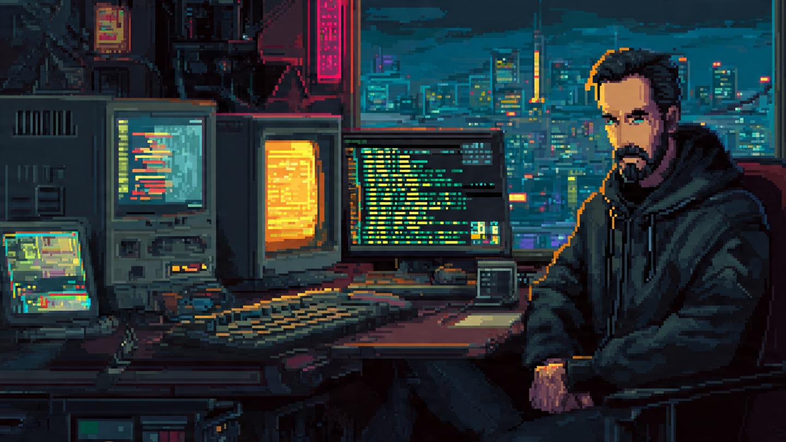
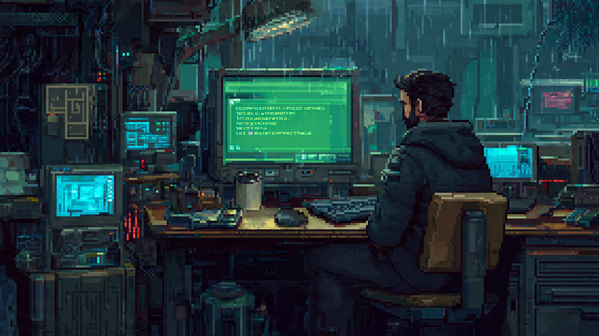

ROOT ACCESS: DevOps Chronicles
Temp:
75°C
Oxigênio:
12%
Carteira:
0.00 Créditos
Conexão:
OFFLINE

"Meu computador antigo de estudos ainda tem muito potencial de uso. Mas a última atualização obrigatória do 'Janela OS' declarou minha máquina obsoleta, exigindo chips artificiais de segurança. Recusei-me a aceitar o descarte forçado. Descobri o mundo do código aberto e do terminal. Minha carteira virtual está zerada, mas o laboratório local está montado. A jornada DevOps começa agora."
O Despertar do Shell - Nível 1
Contratante: Laboratório Pessoal (Estudos Locais)
Gargalo Técnico
Navegação Básica
Recompensa
50.00 Cr.
Ambiente
Alpine Linux
"Para assumir controle total do hardware sem o 'Janela OS', você instalou um sistema de código aberto leve. Porém, o antigo sistema de ventilação mecânica da máquina de testes ficou travado em standby. O processador está esquentando! Acesse o terminal, localize o script de emergência oculto nos subdiretórios e ative os coolers antes que a máquina sofra danos."
operator@bunker7-level1: ~
sh
ROOT ACCESS (v1.0.0-sandbox)
Digite 'help' ou 'hint' para ajuda.
~ $
CAM 01 - OFFLINE (CRITICAL)

AURA-7
Integridade: 35%
[AURA-7]: Memória instável... *glitch*... Módulo de rede desativado. Localize o script de emergência de resfriamento.
DIRETRIZES DA MISSÃO
Listar arquivos ocultos (ls -la)
Acessar pasta oculta (cd .sistema_critico)
Liberar permissão (+x ligar_coolers.sh)
Executar script (./ligar_coolers.sh)
📖 MANUAL DE CAMPO
🐚 O QUE É O SHELL?
O shell é um programa que interpreta seus comandos e os passa para o sistema operacional executar. É a camada entre você e o kernel do Linux. Todo SysAdmin e DevOps profissional usa o shell diariamente para gerenciar servidores.
📁 SISTEMA DE ARQUIVOS LINUX
O Linux organiza tudo em uma árvore de diretórios. O ~ representa sua pasta pessoal (/home/operator). Arquivos iniciados com . (ponto) são ocultos por padrão e só aparecem com ls -la.
🔐 PERMISSÕES POSIX (chmod)
Cada arquivo tem 3 tipos de permissão para 3 grupos:
r = Read (Leitura)
w = Write (Escrita)
x = eXecute (Execução)
Exemplo: -rw-------
Dono pode ler/escrever, mas NÃO executar.
Após chmod +x: -rwx------
Agora o dono pode executar!
📟 REFERÊNCIA RÁPIDA
ls → lista arquivos do diretório
ls -la → inclui ocultos e permissões
cd <pasta> → entra na pasta
cd .. → volta ao diretório pai
cat <arquivo> → exibe conteúdo
chmod +x <arq> → dá permissão de execução
./script.sh → executa script local
hint → pede dica à AURA-7
help → lista comandos do jogo
🧠 POR QUE ./ ANTES DO SCRIPT?
O Linux só executa programas que estão no seu $PATH (lista de pastas conhecidas). Scripts locais não estão no PATH, por isso precisam do prefixo ./ que significa "execute este arquivo daqui mesmo".
⚠️ DICA DE SEGURANÇA
Nunca execute scripts desconhecidos com sudo sem antes lê-los com cat. Um script malicioso com privilégios de root pode destruir o sistema inteiro!

CONTRATO CONCLUÍDO!
Os coolers estão operando a 100% de capacidade. A temperatura do Bunker 7 caiu para níveis seguros (42°C) e a AURA-7 foi parcialmente sincronizada. Recompensa de 50.00 Créditos Virtuais creditada.
Os coolers estão operando a 100% de capacidade. A temperatura do Bunker 7 caiu para níveis seguros (42°C) e a AURA-7 foi parcialmente sincronizada. Recompensa de 50.00 Créditos Virtuais creditada.